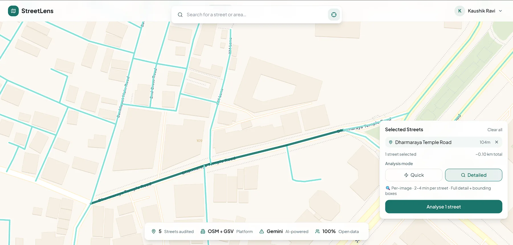
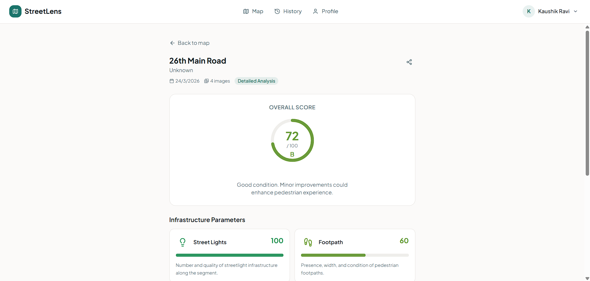
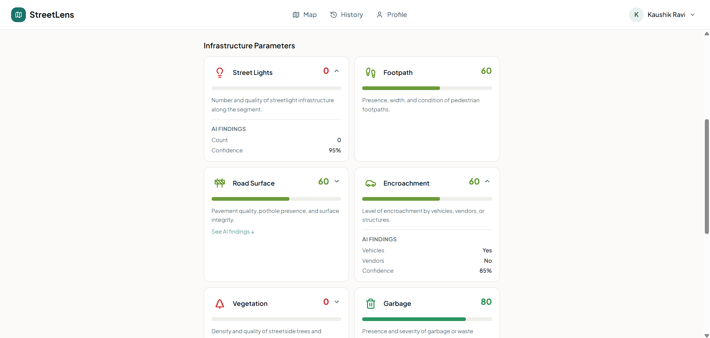
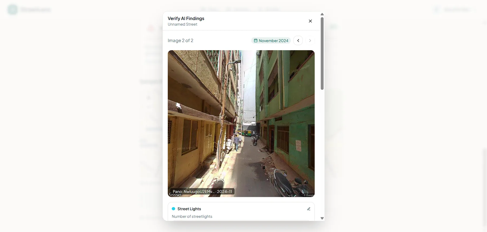

Problem
Traditional street audits rely on expensive and slow field surveys, which limits repeatability and coverage for fast-moving urban operations.
Approach
StreetLens combines street imagery, vision-language analysis, and a weighted scoring model to detect infrastructure quality signals and prioritize attention.
- Detection and classification across 14+ street elements
- Spatial deduplication to avoid inflated counts
- Weighted quality score for operational prioritization
Key Constraints and Fixes
- Initial sampling used only front-back headings and failed on curved roads
- Sampling logic was upgraded to align heading capture with road curvature
- Curve-adaptive capture improved street coverage consistency on non-linear segments
Key Technical Decisions
- Moved from static heading pairs to curve-adaptive sampling logic
- Retained weighted scoring model for operational prioritization instead of binary pass/fail
- Maintained API-first architecture for downstream integration flexibility
Media Gallery





Outcomes
- Substantially reduced audit effort using remote analysis workflow
- Enabled repeatable scoring and easier multi-street comparisons
- Delivered API-oriented architecture for external integration